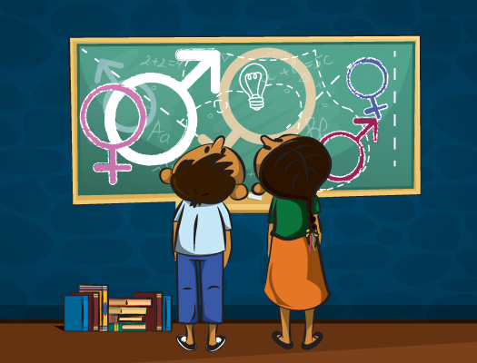
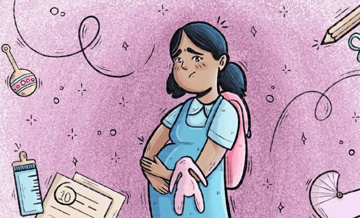
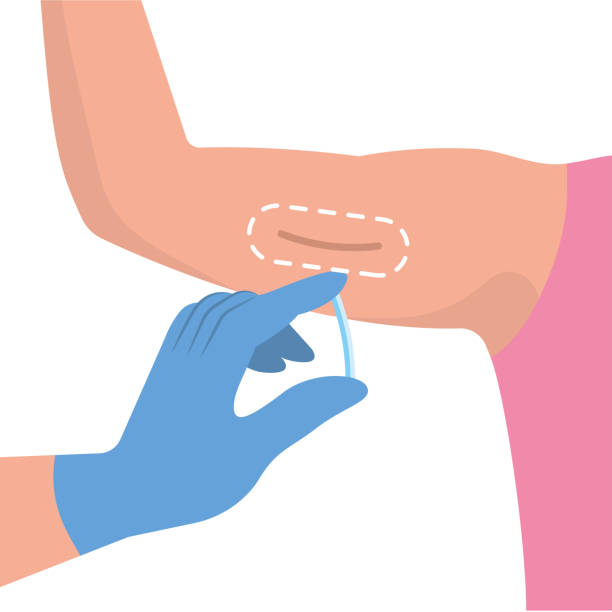
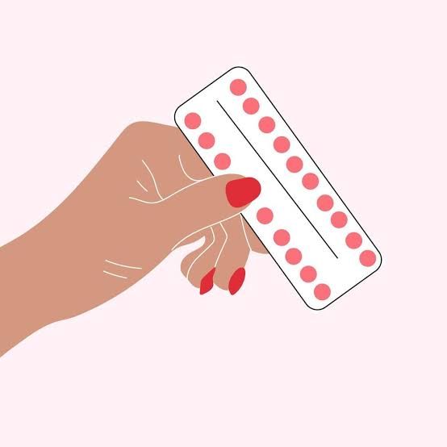

Cuidarte toma un segundo, remediar las consecuencias toma toda la vida.

Es un proceso curricular de enseñanza y aprendizaje sobre los aspectos cognitivos, emocionales, físicos y sociales de la sexualidad. Su objetivo es dotar a los niños y jóvenes de conocimientos, capacidades, actitudes y valores que les permitan vivir con buena salud, bienestar y dignidad; desarrollar relaciones sociales y sexuales respetuosas; considerar cómo lo que eligen puede afectar a su propio bienestar y al de las restantes personas; y comprender y garantizar la protección de sus derechos.
Aprender a poner límites, conocer tus derechos y saber qué métodos existen te da la confianza necesaria para disfrutar cada etapa de tu vida.
Es importante porque permite el intercambio de información de diverso tipo, lo cual la convierte en una de las actividades fundamentales no solo del ser humano, sino de los seres vivos en general. Desde compartir experiencias y aprendizajes hasta coordinar acciones conjuntas, la comunicación facilita la realización colectiva de tareas complejas y además propicia el entendimiento, la cooperación, la empatía y la paz.
El consentimiento siempre debe ser claro, voluntario y continuo. Cuidarte a ti también implica cuidar a la otra persona.

El embarazo adolescente ocurre debido a la pobreza, la desigualdad de género, la falta de educación sexual integral, el acceso restringido a anticonceptivos y a situaciones de violencia sexual o matrimonios forzados. A nivel global, aproximadamente 21 millones de niñas de entre 15 y 19 años quedan embarazadas cada año en regiones en desarrollo, de las cuales 12 millones dan a luz y unas 500,000 son menores de 15 años. Esta situación representa la segunda causa de muerte entre jóvenes de 15 a 19 años debido a complicaciones en la gestación o el parto, y provoca que más del 80% de las adolescentes gestantes** en contextos vulnerables abandonen definitivamente sus estudios escolares.
Desde la primera vez que se tiene relaciones hay riesgo de embarazo o de alguna Infección de Transimisión Sexual (ITS).

No es necesario desintoxicar el cuerpo ni tomar descansos de las hormonas. Interrumpir el uso de anticonceptivos solo aumenta la posibilidad de sufrir un embarazo no deseado.

No hay evidencia de que las píldoras modernas provoquen aumento de peso sostenido a diferencia de las antiguas.
El acceso a la educación y a métodos anticonceptivos promueve decisiones informadas y responsables.